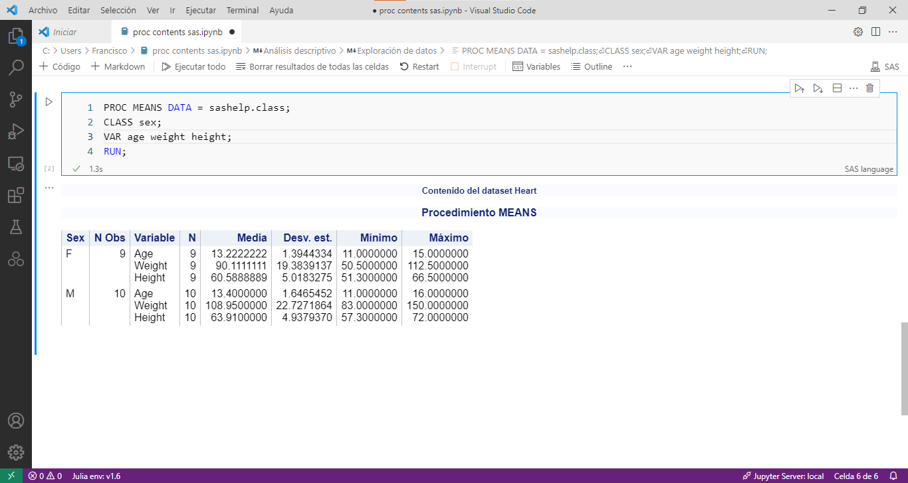
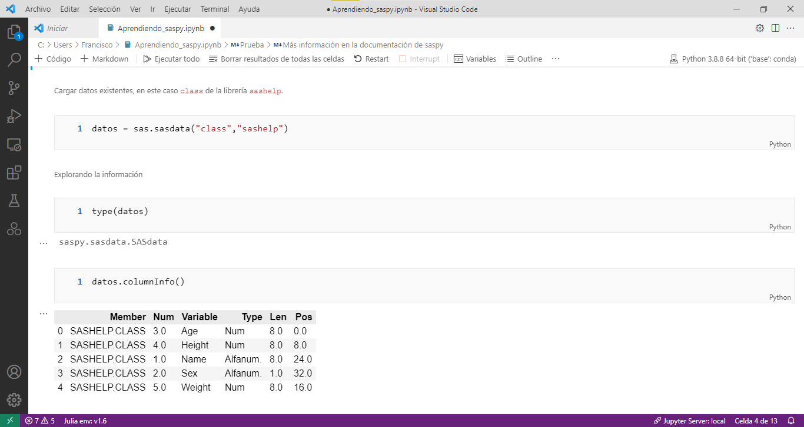
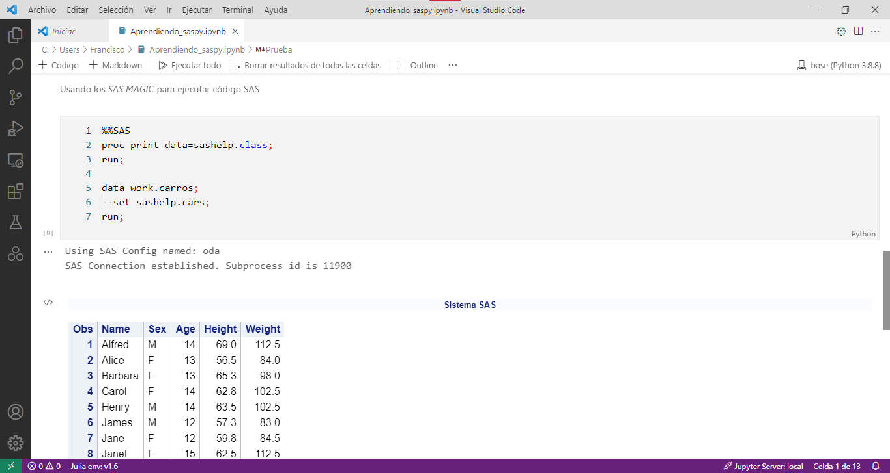

Conexión con SAS¶
Existen muchas formas de conectar SAS con otros lenguajes de programación.
En esta sección se mostrarán algunas maneras de conectarse a con otros programas, ya sea de manera local o remota.
Conexión con Python y Jupyter Notebooks¶
Es posible usar SAS ® OnDemand for Academics y conectarlo con los cuadernos de Jupyter. Para ello se requiere lo siguiente:
- Crear una cuenta en SAS ® OnDemand for Academics para obtener un nombre de usuario y establecer una contraseña.
- Tener instalada la versión más reciente de Anaconda. También se requiere tener instalado Java versión 1.8.0_162 o mayor.
- Instalar el paquete saspy. También se recomienda instalar el sas kernel para los cuadernos de python.
- Realizar las configuraciones necesarias.
Consulte la ayuda de SAS OnDemand para una referencia completa y detallada.
Actualización de Java
Debido a actualizaciones recientes, es posible que existan problemas con Java y no permitan conectarse correctamente. Se recomeida leer este post con el fin de actualizar algunos archivos de java.
Configuración de saspy¶
Se puede instalar el paquete saspy desde la consola (cmd o powershell) escribiendo el siguiente comando:
1 | |
Incluye pip
La distribución de Anaconda ya incluye pip, por lo que solo basta escribir el nombre del paquete en la consola.
Para comprobar que se ha instalado correctamente, se debe escribir en la consola
1 | |
Debe de aparecer algo similar a esto:
1 2 3 4 5 6 7 8 9 | |
Para comprobar la correcta instalación de la librería, se puede escribir en la consola el siguiente comando:
1 2 | |
El resultado nos arrojaría el directorio donde está el archivo de configuración sascfg.py, por ejemplo:
1 | |
En dicho directorio se debe crear una copia del archivo sascfg.py nombrándolo sascfg_personal.py. A continuación se debe borrar el contenido y pegar esto en sascfg_personal.py:
1 2 3 4 5 6 7 8 9 10 11 12 | |
Java
Verifique que el directorio de Java realmente existe, de otra forma no funcionará correctamente.
Posteriormente se debe crear en la carpeta personal (usualmente C:\Users\Usuario) el archivo _authinfo que contenga la información de las credenciales de SAS ® OnDemand de la siguiente forma, sustituyendo por los valores que correspondan:
1 | |
Archivo sin extensión
El archivo _authinfo no tiene extensión y debe ser guardado en formato UTF-8. Si la contraseña contiene espacios, se debe poner entre comillas.
Una vez realizados estos pasos, puede escribir nuevamente en la consola esta instrucción para comprobar que se puede acceder a SAS OnDemand:
1 2 | |
El resultado que se mostraría en la pantalla es el siguiente:
1 2 | |
Adicionalmente se puede instalar el sas kernel para los cuadernos de python usando la consola CMD o Powershell.
1 | |
Para comprobar que se ha instalado exitosamente, se puede ejecutar el siguiente comando:
1 | |
Usando SAS en un cuaderno Jupyter¶
En esta sección se muestra cómo usar un cuaderno de Jupyter y conectarlo con SAS. Se usará Visual Studio Code versión 1.62 usando la extensión Jupyter para la generación del archivo ipynb.
Para hacer uso de esta funcionalidad, se debe crear un cuaderno de jupyter con un kernel de SAS. Revise la configuración de saspy para tener lsito tanto el kernel como el paquete saspy.
Nuevo archivo
Puede crearse un nuevo cuaderno de jupyter desde el menu Archivo, Seleccionar la opción Nuevo Archivo …, aparecerá la opción de crear opción de crear un nuevo archivo de jupyter.
Para pode usarlo, se debe elegir el kernel de SAS y se puede escribir tanto código de SAS como Markdown el el cuaderno. Los resultados estarán dentro del cuaderno de Jupyter y dependiendo de los procedimientos, los resultados serán mostrados en formato HTML.
La siguiente imagen muestra el funcionamiento de SAS en un cuaderno de Jupyter.

Consulte la documentación de sas kernel para más información.
Usando el paquete saspy en un cuaderno Jupyter¶
Las librería y datasets de SAS pueden usarse dentro de Python a través del paquete saspy.
Para hacer uso de la librería, se debe crear un cuaderno de jupyter con un kernel de python. Revise la configuración de saspy para tener todo listo y evitar algún error.
El primer paso es cargar el paquete saspy escribiendo el siguiente código en una celda de código python:
1 2 3 | |
Se desplegará información acerca de la conexión a SAS ® OnDemand y sus configuraciones.
1 2 3 4 5 6 7 8 9 10 11 12 13 14 15 | |
La siguiente imagen muestra algunas funcionalidades del paquete saspy. Consulte la documentación de saspy para una referencia completa de los métodos del paquete.

Usando código SAS usando cualquier kernel de Jupyter¶
Es posible usar código SAS en un cuaderno de Jupyter directamente, aunque el kernel no sea de SAS.
Para hacer esto, se hace uso de los SAS MAGICS, que son trozos de código de otro lenguaje que se ejecutan. Simplemente en una celda nueva se debe colocar al inicio %%SAS y debajo el código SAS que se desea realizar.
La siguiente muestra su uso.

Nótese que a pesar de estar en un cuaderno con kernel python, se ha realizado una conexión con SAS y se ha ejecutado el código de la celda.
Activar el paquete
No olvide activar el paquete saspy antes de usar el sas magic para evitar errores.